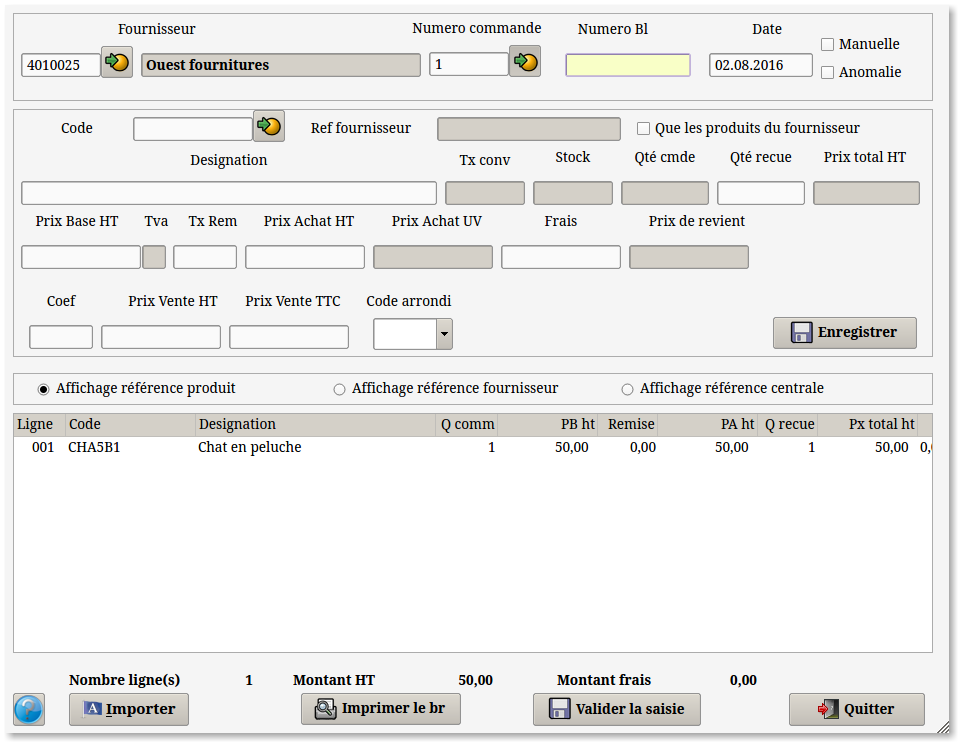

Réceptions
automatiques

A partir de cet écran vous pouvez réceptionner vos
produits automatiquement a partir d'un bon de commande ou de l'ensemble des bons de commande pour un fournisseur.
1- Pour une seule commande d'un fournisseur
Saisir en premier le
numero de la commande a réceptionner (manuellement ou a l'aide du
bouton de recherche).
S'affichent
alors le code du fournisseur, le numéro de commande, la date de
reception et les lignes des produits commandés. Concernant le numéro de
BR vous pouvez faire une saisie manuelle (par exemple mettre le n° du
BL fournisseur) ou faire F9 afin de générer une numérotation
automatique.
2- Pour l'ensemble des commandes d'un fournisseur
Saisir le code du fournisseur, le numéro de BR et
la date de réception s'affichent. C'est la validation de la date qui
provoquera l'affichage des lignes de produits commandés.
3- La réception.
Si les quantités
recues sont égales aux quantités commandées alors vous pouvez cliquer
sur le bouton "Valider la saisie".
Si une ou plusieurs
quantités reçues sont différentes des quantités commandées, cliquer sur
la ligne choisie (dans la partie basse de l'écran) et modifier la
quantité recue (dans la partie haute).
Si le produit n'a pas été réceptionné (absent des
produits reçus) il suffit de sélectionner la ligne et d'appuyer sur la
touche zéro du pavé numérique pour que la quantité reçue passe
automatiquement à zéro. Cette méthode est plus rapide que la
modification de la ligne.
Le bouton "Manuelle" permet une saisie manuelle soit du code produit,
soit du code barre soit par une lecture à l'aide d'une douchette.
Activer ce bouton mettra toutes les quantités reçues à zéro, a
contrario si on le coche le programme remettra les quantités reçues
égales aux quantités commandées.
Si le
produit est présent dans la commande avec une quantité égale à zéro
alors la quantité reçue du produit sera mise à jour. Si le produit est
présent dans la commande avec une quantité différente de zéro alors le
programme demandera ce qu'il doit faire : Soit ajouter, soit remplacer,
soit ne rien faire et retourner à la saisie. Si le produit n'existe pas
dans la commande alors une nouvelle ligne sera créée.
A la validation :
Si le produit est
stocké, les zones 'quantité en stock, les zones concernant le dernier
prix d'achat et les statistiques d'achat sont mises à jour.
Si le produit n'est
pas stocké, les zones concernant le dernier prix d'achat et les
statistiques d'achat sont mises à jour.
Si le produit n'existe
pas, il reste malgré tout dans le BR fournisseur.
Si
la gestion du matériel est activée alors le programme va contrôler que
les numéros de série ont été saisis. Si un numéro de série n'a pas été
saisi alors une fenêtre s'ouvrira pour prévenir qu'il faudra saisir le
numéro de série. Il suffira alors de rappeler la ligne concernée car
c'est la validation de la ligne qui provoquera la saisie du ou des
numéros de série.Voir rubrique matériels
Si toutes les
quantités recues sont égales aux quantités commandées alors le bon de
commande est supprimé. Dans le cas ou des quantités recues seraient
différentes alors ces lignes resteront présentes dans le bon de
commande avec une quantité égale au reliquat, les lignes réceptionnées
étant quant a elles supprimées
Si vous quittez sans avoir
préalablement validé votre saisie le programme vous demandera si vous
souhaitez le faire avant de sortir.
Dès
lors que la réception est validée on peut imprimer le BR en cliquant
sur le bouton "Imprimer le br". Cette impression va générer un document pdf qui sera copié sous le répertoire ~/BR de l'utilisateur.
NB: Pour supprimer une ligne, on l'a sélectionne et on clique sur "Suppr"